Prepared by Zainab Fatima
This documentation covers my Week 7 Infrastructure as Code work using
OpenTofu and CSC cPouta. I kept the work in a separate
week7-iac directory and branch so it would not interfere
with my earlier assignment. The aim was to describe the virtual machine
and public web access in configuration files, inspect plans before
making changes, and understand what happens when the configuration and
running infrastructure do not fully match.
week7-iac
I kept the Week 1 VM, cloud-services-vm, separate and did
not change it. The Week 7 VM is week7-iac-vm. This
separation mattered because I wanted to test the new configuration
without risking the previous assignment.
Infrastructure as Code (IaC) means describing infrastructure in files
instead of relying only on clicking through a cloud dashboard and
remembering each setting. In my Week 7 work, the OpenTofu files describe
the VM's name, image, flavor, SSH key pair, security group, network,
cloud-init data, floating IP and outputs. I can review these files in
Git, and tofu plan shows the changes OpenTofu expects
before I apply them.
This helps make deployments more consistent. If I had to create another similar server manually, I could forget a setting or choose a different value. With IaC, the intended setup is written down and another person can review it. The plan also helps me spot changes that might be disruptive before they happen.
I also noticed a limitation in my own setup: not every part of the environment was defined in code. The VM and floating IP were described in OpenTofu, but the security group and its rules already existed in cPouta and were not fully created as OpenTofu resources. The floating IP association used an existing port ID too. Therefore, the configuration is not yet completely reproducible from code alone.
Declarative automation describes the result I want, while imperative
automation describes the steps to carry it out. OpenTofu is mainly
declarative: I state that I want a VM with a particular image, flavor,
key pair and network, and OpenTofu compares the configuration with its
state and the cloud resources to calculate a plan. Commands such as
installing Apache with apt and enabling it with
systemctl are imperative because they tell the machine
which actions to perform.
Idempotency means repeating an operation with the same intended inputs should leave the system in the same intended state rather than continually making extra changes. This matters in automation because a deployment may be run more than once. A well-designed configuration should check the desired state and avoid unnecessary changes when the system is already correct.
In my practical work, cloud-init was meant to install Apache when the VM
was created. The original user-data file had a UTF-8 byte-order mark
before the #cloud-config header, and the cloud-init log
reported that the user data was unhandled. I removed the BOM from the
local file, but OpenTofu then proposed replacing the existing VM because
the user-data hash had changed. I did not apply that replacement because
the server was already running. I installed Apache on the existing VM
and verified that the page worked. This showed me that correcting a
configuration file does not automatically rerun cloud-init on an
existing machine.
OpenTofu is an open-source Infrastructure as Code tool that uses HCL and a workflow similar to Terraform: initialize providers, validate configuration, review a plan, and then apply approved changes. It was created as a community-driven fork after HashiCorp changed Terraform's license from the Mozilla Public License to the Business Source License in 2023. The fork provides an open-source path for users who want a community-governed tool under an open license.
For my cPouta task, the day-to-day workflow was very similar: I wrote resource definitions, initialized the OpenStack provider, validated the files and reviewed the plan. The choice can matter to a company because of licensing, governance, support, provider compatibility and existing workflows. OpenTofu was suitable for my assignment because it supported the OpenStack provider and let me practise the plan-before-apply approach with HCL.
The state file records the relationship between resources declared in the configuration and resources OpenTofu manages. It stores resource identifiers and attributes needed when OpenTofu refreshes the state and calculates a plan. In this project, the local state allowed OpenTofu to recognise the Week 7 VM and floating IP instead of treating every plan as a completely new deployment.
State should not normally be committed to a public Git repository because it can expose infrastructure details and, depending on the resources and provider, sensitive values. Multiple people using separate state copies can also create conflicts. Teams usually use a remote backend with access controls and locking. For this assignment, I added the Week 7 state file, provider-schema output and local OpenTofu working directory to the ignore rules. I kept credentials and my private SSH key outside the repository.
I used OpenTofu 1.13.0 on Windows PowerShell and the OpenStack provider.
The configuration is in week7-iac/. The main files are
versions.tf, provider.tf,
variables.tf, main.tf,
cloud-init.yaml, floating_ip.tf,
floating_ip_association.tf and outputs.tf.
The Week 7 VM used Ubuntu 24.04, flavor standard.small, key
pair cloud-services-key, network
project_2020498 and security group
week7-iac-security. Its private IP was
192.168.1.152 and its public floating IP was
86.50.22.185. The earlier
cloud-services-vm remained present.
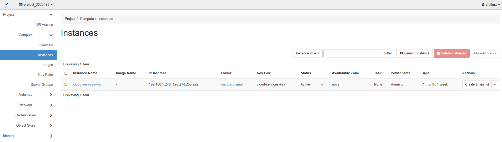
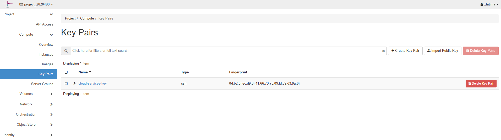
I used variables for the instance name, image, flavor, key pair, security group and network. This makes the resource easier to read and lets me change values without editing the resource body. The outputs report the instance name, private IP, floating IP and assignment label.
resource "openstack_compute_instance_v2" "web" {
name = var.instance_name
image_name = var.image_name
flavor_name = var.flavor_name
key_pair = var.key_pair_name
security_groups = [var.security_group_name]
user_data = file("${path.module}/cloud-init.yaml")
network {
name = var.network_name
}
}The floating IP was defined separately and associated with the VM's existing network port. One limitation is that the association currently uses a fixed port ID instead of deriving the port from the compute resource. If the VM is replaced, that ID may no longer be valid. The security group and its rules were also configured in cPouta rather than fully defined as OpenTofu resources.
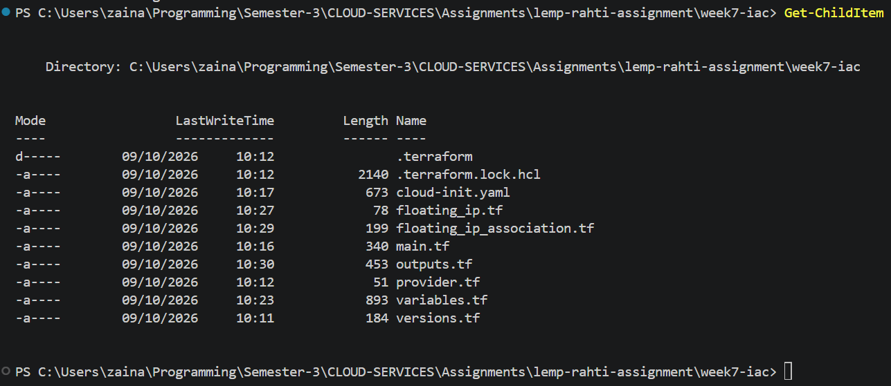
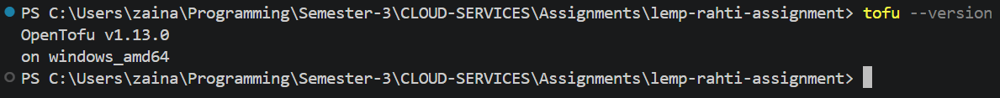
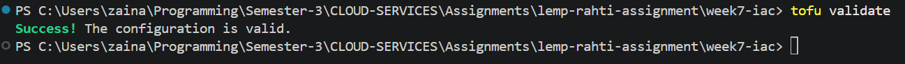
I initialized the provider and validated the configuration before applying it. The Week 7 instance and floating IP were created and became active. I connected over SSH using the private key stored on my own computer; the key and cloud credentials were not committed to Git.
The initial cloud-init run did not install Apache because the user-data
file contained a BOM before the cloud-config header. I checked the
cloud-init status and log, removed the BOM from the local file and
verified that the file began with #cloud-config. Since
OpenTofu proposed replacing the running instance after this change, I
did not apply the replacement. To keep the current server available, I
installed Apache on the running VM and checked that the service was
active and returned HTTP 200 locally.
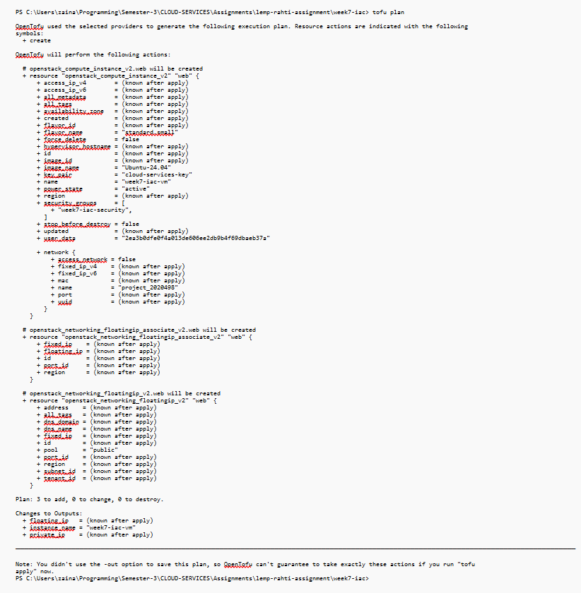
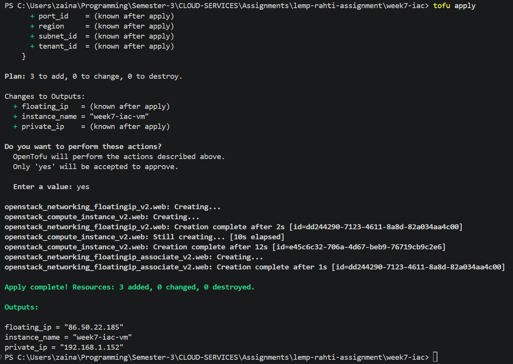
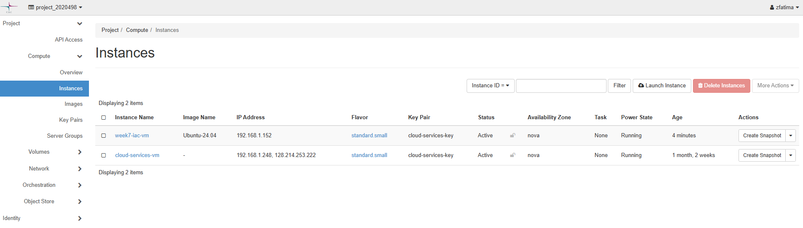
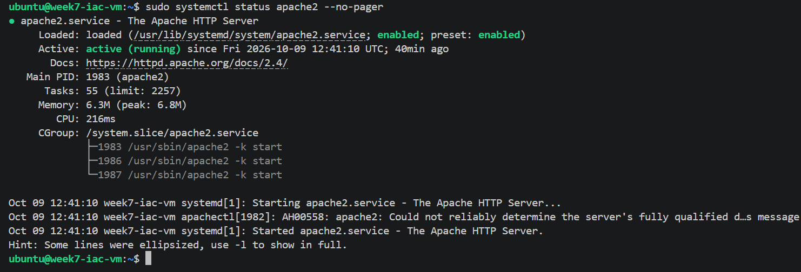
The Week 7 security group allowed inbound SSH on TCP port 22 from the configured client address, HTTP on port 80 from the Internet, and later HTTPS on port 443 from the Internet. Outbound IPv4 and IPv6 traffic was allowed. Restricting SSH to a specific source address is safer than opening port 22 to all addresses. The security group existed in cPouta and its rules were not all managed as individual OpenTofu resources in this version.
After Apache was running, I tested the page through the public floating IP and confirmed that port 80 was reachable. The page displayed the Week 7 heading and explained that the server had been configured for the Infrastructure as Code assignment.
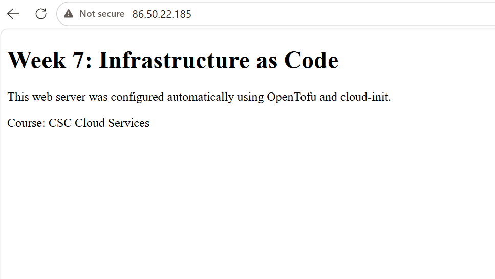
Prediction: I expected a change to the cloud-init user data to appear in the plan. Depending on how the provider treats the change, it might update the instance or require replacement, so I planned to inspect the proposed actions before applying anything.
Result: After removing the BOM from
cloud-init.yaml, tofu plan proposed replacing
the VM because the stored user-data hash differed from the corrected
file. The plan showed one resource to add and one to destroy. I did not
apply this plan because replacing the running VM could interrupt the
site and the floating IP association uses a fixed port ID.
Explanation: The plan exposed a potentially disruptive change before it happened. Fixing a local file does not retroactively rerun cloud-init on an existing machine. A more complete solution would manage bootstrap and networking consistently and test replacement on a disposable instance first.
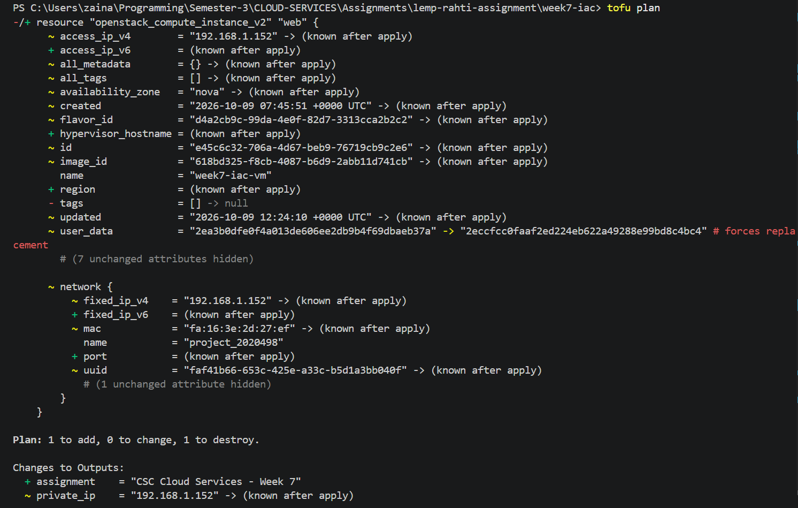
Prediction: I expected a plan to identify differences between the configuration, state and infrastructure that OpenTofu manages. I also expected that changes made inside the guest operating system might not be fully represented if they were not described as managed resources or provisioned through an updated configuration.
Result: I checked the current infrastructure with a plan and refresh. During troubleshooting, Apache and HTTPS were configured directly on the running VM. Those guest operating system changes were not represented as separate OpenTofu resources in the current configuration. I did not deliberately remove a network rule or damage the live server just to produce drift, because that could interrupt the public site.
Explanation: OpenTofu can detect drift for attributes of resources it manages when it refreshes state against the provider, but it cannot automatically manage every manual change inside the guest operating system. Since Apache and certificate files are not separate resources in this configuration, a plan is not a complete audit of their settings. A future improvement would be to codify the security group and rules and use cloud-init or configuration management for server setup, then test drift on a temporary resource.
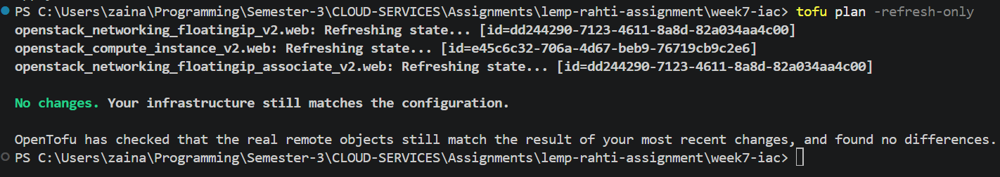
Prediction: I expected
tofu plan -destroy to list the resources that a destroy
operation would remove. A plan is a preview and does not apply those
actions by itself.
Result: The destroy plan refreshed the VM, floating IP
and floating IP association, then listed all three for destruction. It
showed Plan: 0 to add, 0 to change, 3 to destroy. I stopped
at the plan stage and did not run tofu destroy, because it
would remove the working Week 7 VM and public IP association.
Explanation: The plan confirmed which resources OpenTofu currently tracks and the consequences of destroying them. I chose not to destroy the live instance simply to demonstrate rebuilding, since that would make the public page unavailable and the hard-coded port ID would need attention during recreation. A proper reproducibility test should be carried out in a disposable environment after all required resources and associations are represented in code.
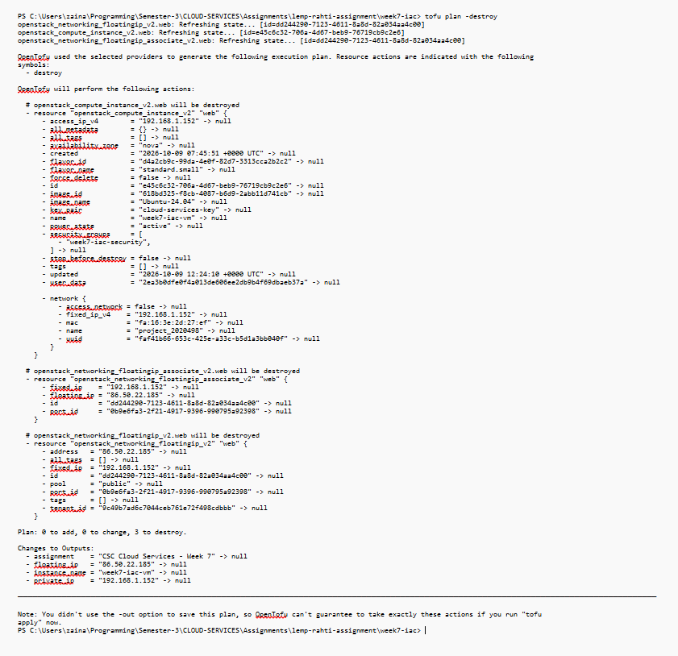
After HTTP was working, I configured HTTPS so the public page could be
reached through a domain name. I created the DuckDNS hostname
week7-iac-cs.duckdns.org and checked that it resolved to
the Week 7 floating IP, 86.50.22.185. On the VM, I enabled
Apache's SSL module and default SSL site, then installed Certbot and its
Apache plugin.
Certbot successfully obtained a Let's Encrypt certificate for the
hostname and deployed it to Apache's SSL virtual host. I added an
inbound TCP 443 rule to the Week 7 security group and used
Test-NetConnection in PowerShell to check that port 443 was
reachable. I then opened the hostname in a browser and verified the page
over HTTPS. The certificate and Apache SSL setup were configured
manually on the VM rather than fully automated by the current OpenTofu
files.
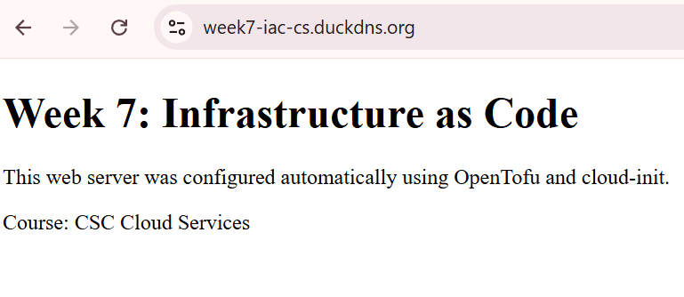
I kept Week 7 on the separate week7-iac branch. The
repository contains the configuration and cloud-init files, while local
state, provider-schema output and the OpenTofu working directory are
ignored. The private SSH key and cloud authentication file stayed
outside the repository. These precautions matter because the code should
be shareable without publishing credentials or machine-specific state.
The Week 7 changes were committed and pushed to the branch. I checked the final Git status and plan output before wrapping up. Local state files, private keys and authentication files should remain outside the repository.
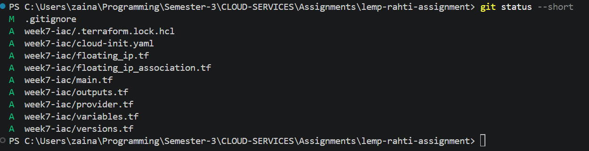
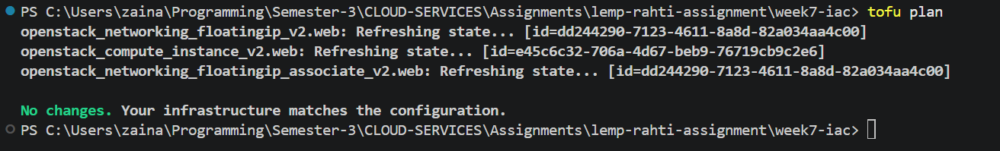
| Problem | What happened | What I did |
|---|---|---|
| Cloud-init user data was not processed | The log reported unhandled user data beginning with a BOM before the cloud-config header. | I removed the BOM from the local YAML file and verified its first bytes. I did not apply the replacement plan because it would have replaced the working VM. |
| OpenTofu planned to replace the VM | The user-data hash changed and the plan showed one add and one destroy. | I reviewed the plan and stopped before applying it to protect the running server. |
| HTTPS was initially unreachable | Apache could answer HTTPS locally, but port 443 was initially blocked externally. | I added an HTTPS ingress rule, checked TCP 443, and verified the hostname in the browser. |
| Certificate warning on the IP address | The default SSL certificate was not trusted by the browser. | I created a DuckDNS hostname and used Certbot to obtain a trusted certificate for that hostname. |
The most useful lesson for me was that a successful
tofu apply is only one part of infrastructure management. I
also need to understand the plan before applying it, especially when a
change could replace a running machine. In this case, the plan exposed a
replacement caused by the cloud-init data change, and reviewing it
helped me avoid interrupting the site.
I also learned the difference between infrastructure OpenTofu manages and changes made directly inside a VM. The public website and HTTPS endpoint worked, but parts of the guest configuration and security-group setup were still manual. To make the deployment fully reproducible, I would bring those resources into code and test a complete destroy-and-rebuild process on a temporary VM rather than risking the running assignment server.